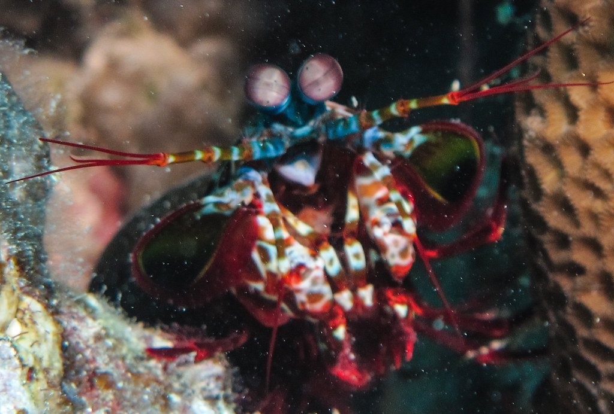
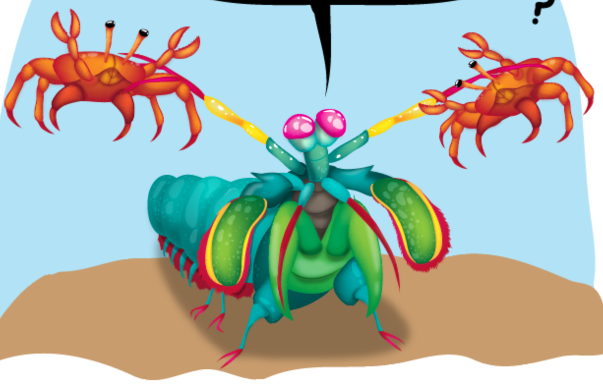
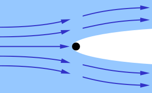

Fatos sobre o Stomatopoda
Informações Gerais
Seu nome científico é Odontodactylus scyllarus
Classificação Científica
Cones de Cores
Ele é um animal que possui 16 cones receptivos de cor enquanto nós humanos possuímos apenas 3 cones (RGB).
Um dos seres mais violentos
O Stomatopoda é um dos seres mais violentos da terra
Ele tem 2 garras na sua frente tão rápidas que são comparadas à um tiro de um rifle calibre .22 e em menos de 3 milésimos de segundos ele pode atacar sua presa com uma força equivalente a 1.500 newtons de força (Para ter uma noção se um homem tivesse tamanha força, conseguiria arremessar uma bola de beisebol para a órbita da terra.).
Força de seus membros
Seus membros se movem tão rapidamente que faz com que a água ao seu redor ferva, fazendo com que ocorra um processo chamado de supercavitação. Essas bolhas de cavitação criam ondas de choque submarina que faz com que sua presa morra mesmo se ele errar o golpe
Referências Bibliográficas
Veja o VÍDEO do Stomatopoda em ação